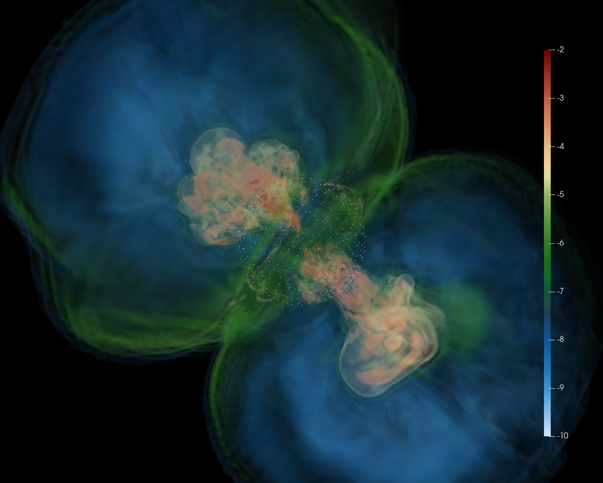
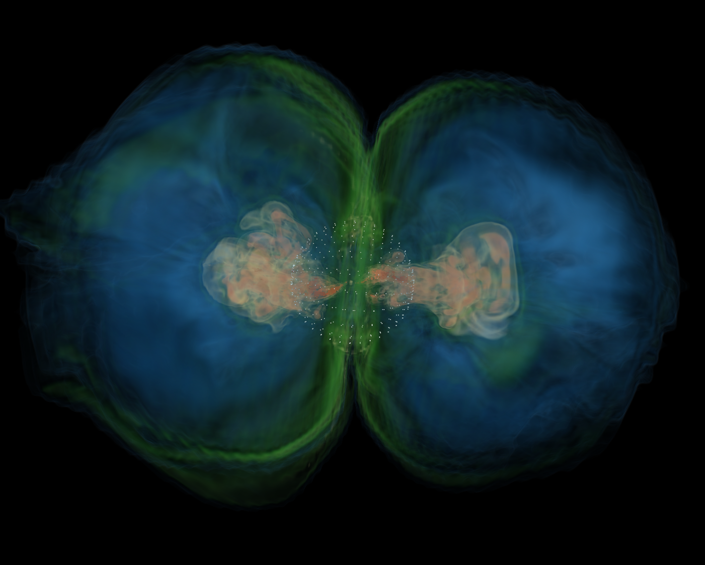

Research Project
Core-Collapse Supernovae
My master's thesis research at CUNY and the Flatiron Institute used 3D GRMHD simulations to study collapsars, accretion-disk formation, and disk-powered outflows.
Project Overview
Conducted under the supervision of Dr. Ore Gottlieb at the Center for Computational Astrophysics, this project investigates the dynamical evolution of collapsars: core-collapse supernovae that directly form black holes.
Using the 3D GRMHD code HAMR, I simulated massive stellar collapse across a range of natal black hole spins to study how rotation influences disk formation, magnetic flux accumulation, and the launching of outflows.
A central result is that even a non-spinning black hole can produce vigorous, subrelativistic, disk-powered outflows driven by the angular momentum of the nascent accretion disk. These outflows can propagate through the stellar envelope and break out of the progenitor, offering insight into the continuum between ordinary CCSNe and GRB-producing collapsars.
Plots and Figures
The blocks below already use your existing project images. Duplicate any figure
block if you want to add more snapshots, slices, or annotated plots later.

.png)
.png)

Video
This section uses one of your current local videos as a working example. If you want to add more,
duplicate the video block or move future files into assets/media/.
If you want to swap this out later, update the filename in the source tag and keep the
relative path format the same.
Related Publication
A related publication can be found here: Bopp & Gottlieb et al. (2025)